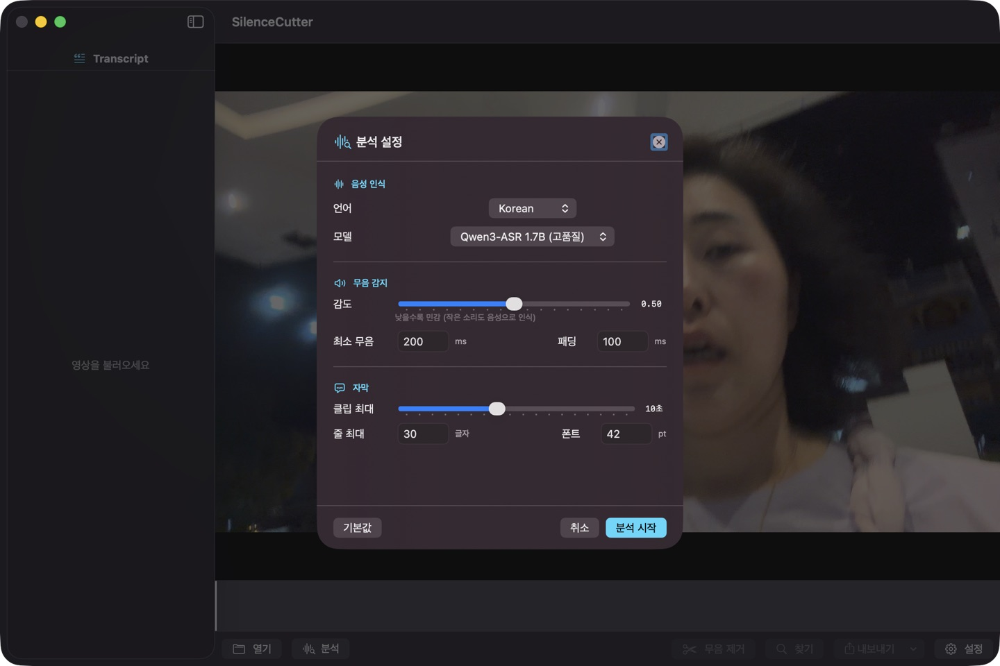

See it in action.

Analysis Settings
Configure language, model, VAD sensitivity, subtitle parameters

Real-time Progress
Track analysis and model download with byte-level precision

Final Cut Pro Import
FCPXML timeline + iTT subtitles load directly into FCP